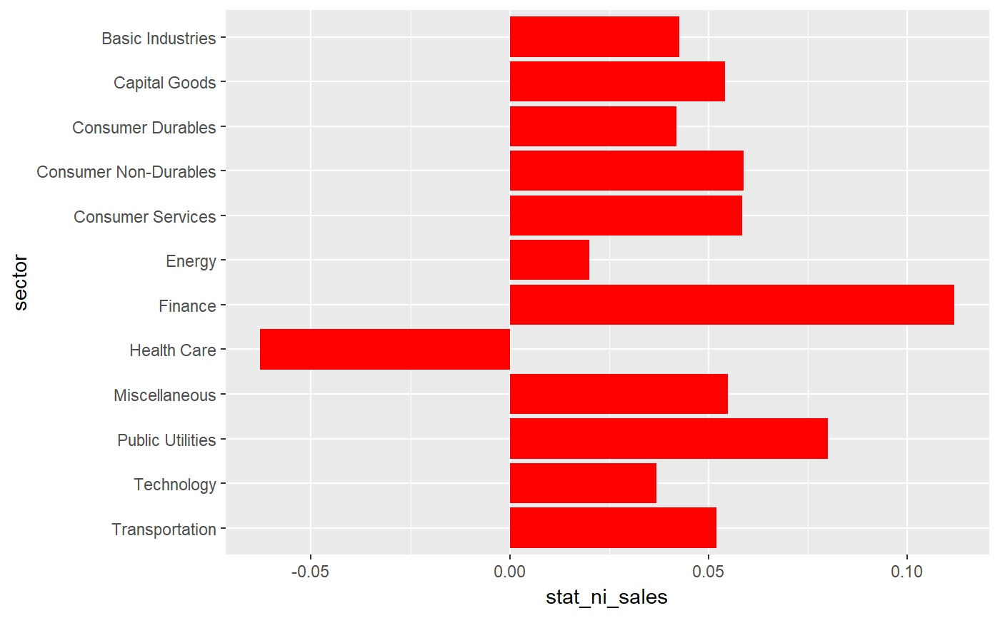

prepare_by_group_bar_graph.RdReads a data frame containing a grouping factor and a numerical variable and plots a bar graph of a given statistic of the variable by the grouping factor.
prepare_by_group_bar_graph(df, by_var, var, stat_fun = mean, order_by_stat = FALSE, color = "red")
| df | Data frame containing the grouping factor and the numerical variable to be plotted |
|---|---|
| by_var | a string containing the column name of the grouping factor |
| var | a string containing the column name of the numerical variable |
| stat_fun | a function to be called on the numerical variable.
Will be called with |
| order_by_stat | a logical value indicating whether you want your bars to be ordered the value of the statistic (defaults to FALSE) |
| color | bar color |
A list containing two items:
A data frame containing the statistics by group
The plot as returned by ggplot
data(russell_3000) graph <- prepare_by_group_bar_graph(russell_3000, "sector", "ni_sales", median) graph$plot